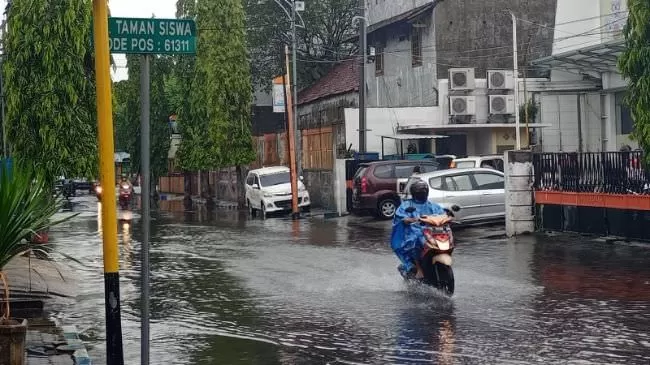
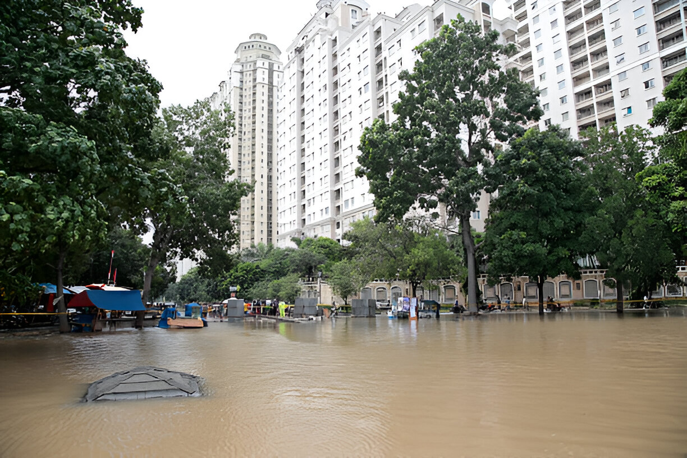

Fenomena Cuaca Ekstrem Melanda Sejumlah Wilayah Indonesia
Dipublikasikan: 21 Oktober 2025

Badan Meteorologi, Klimatologi, dan Geofisika (BMKG) memperingatkan masyarakat Indonesia untuk meningkatkan kewaspadaan terhadap potensi cuaca ekstrem yang terjadi dalam beberapa hari terakhir. Hujan deras disertai angin kencang dan petir melanda sejumlah wilayah seperti Jakarta, Bandung, Samarinda, dan Makassar.
Menurut keterangan BMKG, fenomena ini disebabkan oleh adanya peningkatan aktivitas monsun Asia yang membawa massa udara lembap dari Samudra Hindia. Selain itu, terdapat pengaruh dari fenomena atmosfer global seperti Madden-Julian Oscillation (MJO) yang memperkuat potensi pembentukan awan hujan di wilayah Indonesia bagian barat dan tengah.
Dampak yang Terjadi di Berbagai Wilayah
Beberapa daerah telah melaporkan dampak nyata dari cuaca ekstrem ini. Di Jakarta Barat, beberapa ruas jalan tergenang air setinggi 30–50 cm yang menyebabkan kemacetan panjang pada jam sibuk. Sementara itu, di Kalimantan Timur, pohon tumbang dan atap rumah warga rusak akibat angin kencang yang melanda pada Minggu malam.
Di Sulawesi Selatan, aktivitas nelayan terganggu karena tinggi gelombang di beberapa perairan mencapai 3 meter. Pihak BMKG setempat juga mengimbau masyarakat untuk tidak memaksakan perjalanan laut sebelum kondisi cuaca membaik.

Tanggapan Pemerintah dan Upaya Penanggulangan
Pemerintah daerah di berbagai wilayah telah menyiagakan tim evakuasi serta menyediakan posko darurat untuk warga terdampak banjir dan longsor. Kepala BNPB, Letjen Suharyanto, menyebut bahwa koordinasi dengan BPBD dan TNI-Polri sudah dilakukan sejak awal minggu untuk mempercepat penanganan bencana.
“Kami mengimbau masyarakat untuk terus mengikuti informasi resmi dari BMKG dan tidak panik menghadapi kondisi cuaca saat ini. Tetap waspada terhadap potensi banjir bandang dan pohon tumbang,” ujarnya dalam konferensi pers, Senin (21/10).
Langkah-langkah Antisipasi untuk Warga
- Pastikan saluran air di sekitar rumah tidak tersumbat.
- Hindari bepergian saat hujan deras dan angin kencang.
- Matikan listrik sementara jika air mulai masuk ke rumah.
- Simpan dokumen penting di tempat aman dan kedap air.
- Ikuti perkembangan cuaca melalui aplikasi BMKG atau media resmi.
Cuaca ekstrem diprediksi masih akan berlangsung hingga akhir pekan ini. Masyarakat diminta tetap tenang, namun tetap waspada dan tidak menyepelekan potensi bencana yang bisa muncul akibat curah hujan tinggi.
BMKG juga menambahkan bahwa setelah periode cuaca ekstrem ini, suhu udara di sebagian wilayah Indonesia akan mengalami penurunan sementara, terutama pada malam hari. Fenomena ini masih dalam kondisi normal dan tidak perlu dikhawatirkan.